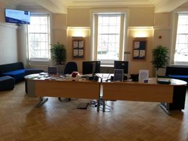
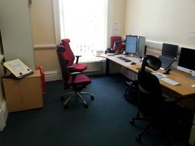

Hello my name is Kate and I am the Access Adviser you will be meeting at your Study Needs Assessment appointment.
You may also meet Kirsty, our Assessment Centre Administrator, Sharon our other Access Adviser and Kate, The Assessment Centre Manager.
If you have any access requirements or preferences to enable you to fully participate in the assessment please do let us know, using the contact details shown on this slide. It is very important to us that you are able to express your views and opinions so that we can ensure you get the most out of this process and that the recommendations we make are appropriate to your individual requirements.
We will meet at the Headingley Campus, Priestly Building. When you arrive for your assessment you can wait in our reception area. I will collect you from reception and take you to room G02 where the assessment will take place


The study needs assessment tends to be a structured but fairly informal 1:1 discussion with an Access Adviser and Study Needs Assessor which will usually last between 1.5 and 2 hours. You will have the opportunity to talk about strategies you have already developed and support you have found useful in the past as well as exploring any additional support that is available to you throughout your degree programme.
Firstly, I will introduce myself, offer you a drink and try to ensure you are comfortable in the environment. I will then check your personal details and explain to you what will happen during the assessment. We will talk about:
We will then talk about the course you have chosen to study and each area of your study in depth in order to identify any impact your disability is likely to have on the way you learn.
Finally, we will talk about the specialist support and equipment available to you at University, I will show you some of the assistive software and equipment, and in some cases you may also be able to try it out.
It’s a good idea to think about your strengths and weaknesses. Write this down as a list of bullet points and bring it to the meeting.
Think about support you have found useful during previous studies or in the work place and/or challenging experiences you have had. Also think about any support you think could have helped you at the time.
Also make notes about your strengths and preferences in those areas, as that will help academic staff to support and understand you.
Recommendations for support will depend on your individual circumstances and must be considered in relation to the DSA regulations and guidance. Recommendations will vary from person to person, depending on their course, their disability and the impact their disability is likely to have on their studies.
During the assessment you will have the opportunity to ask questions or suggest strategies or equipment that you feel you may benefit from. I will discuss these with you, along with any other support or adjustments I think would be appropriate and beneficial for you.
This could include some human support, usually delivered on a 1:1 basis, such as mentoring or study skills support. Specialist equipment or assistive technology, such as mindmapping software to assist in planning your work, text to speech software to assist you in reading and processing information and proofreading your work and dictate software to assist you in composing your work. Some links to examples of the available software are included at the end of this presentation, should you wish to look at them before your appointment.
I may also make recommendations for your course team and University Disability Adviser to consider, such as, examination recommendations, extended library loans or ensuring you are provided with handouts prior to classes.
I will write your report and a copy will be sent to you within 10 working days, we will also send a copy to your funding body and with your permission, your University Disability Advice team.
I will talk to you in more detail at the appointment about what you should expect to happen after your appointment and I will give you some information to take away with you.
We’re looking forward to meeting you at your appointment but if you have any questions in the meantime or if you would like some further information please do contact us.
T: 0113 812 3357
E: assessmentcentre@leedsbeckett.ac.uk
Disability Assessment Centre
G01 Priestley Hall
Headingley Campus
Leeds Beckett University
Leeds LS6 3QS